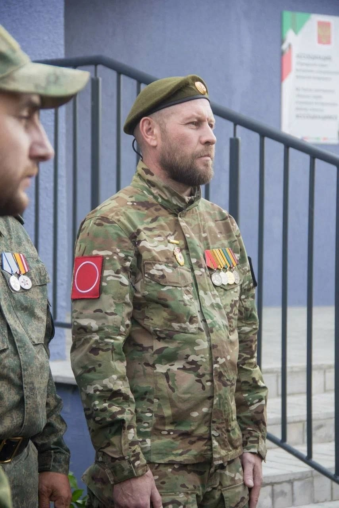
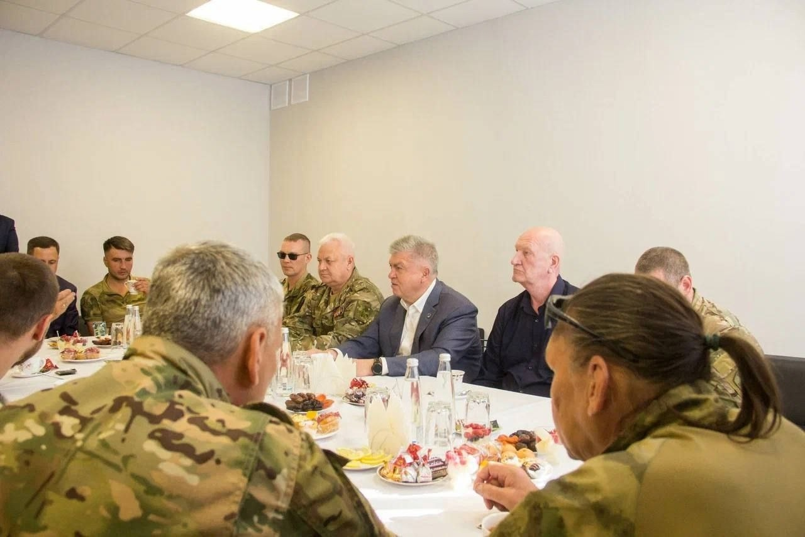
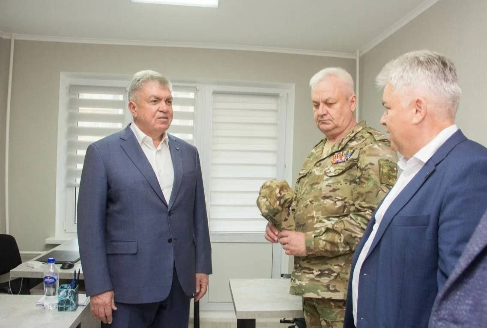
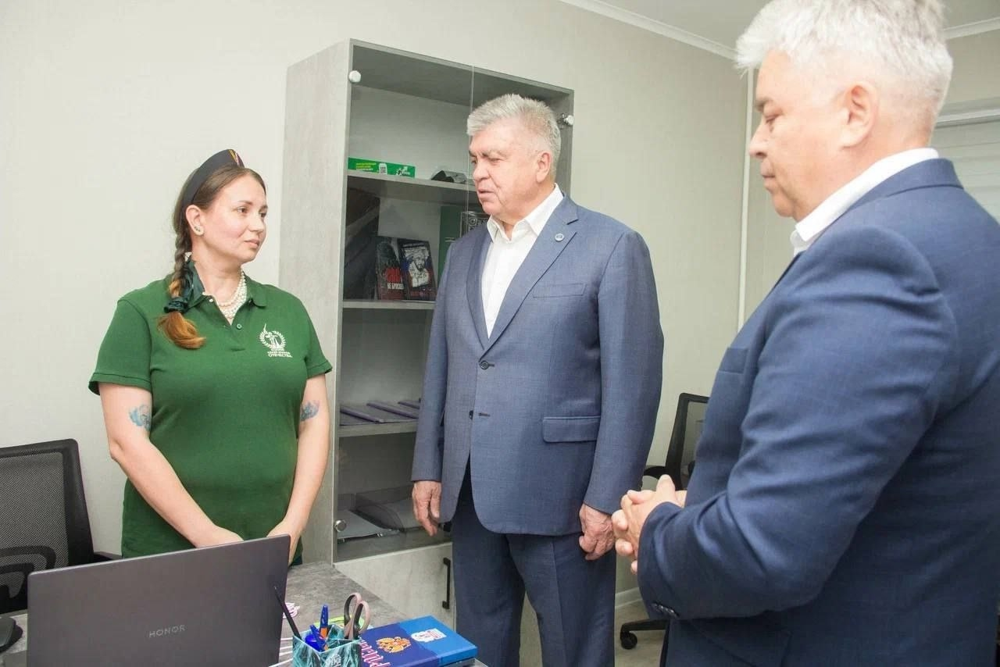
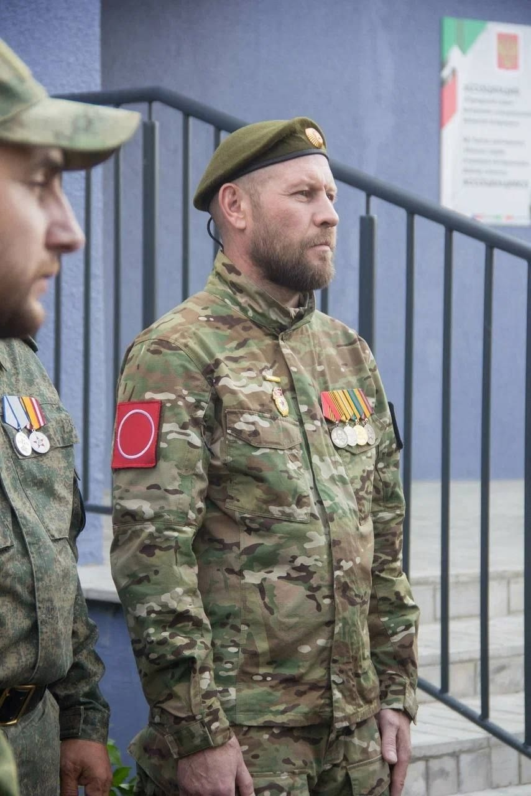
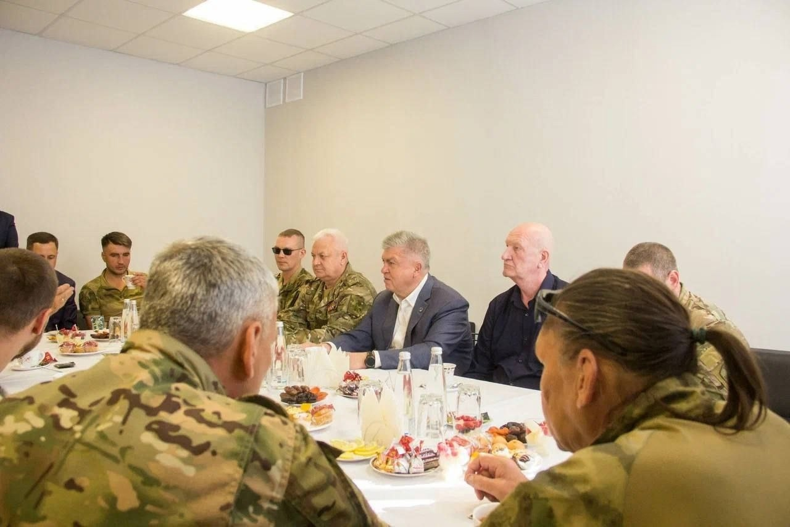
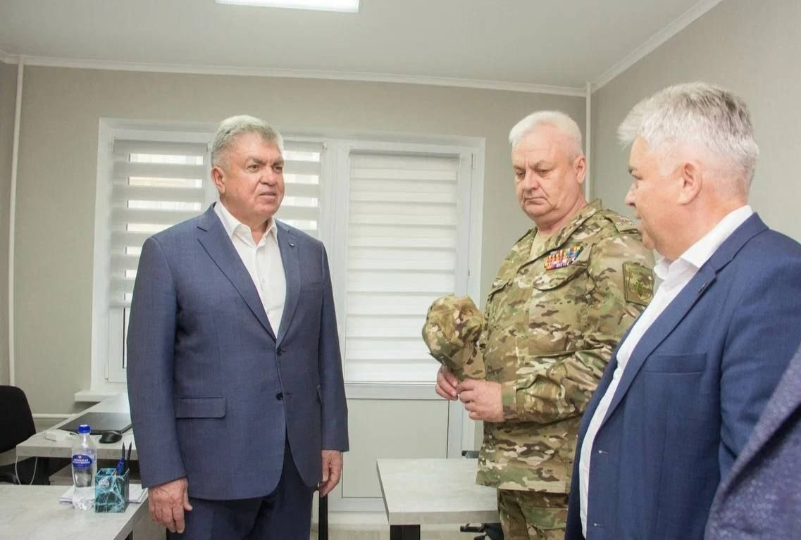
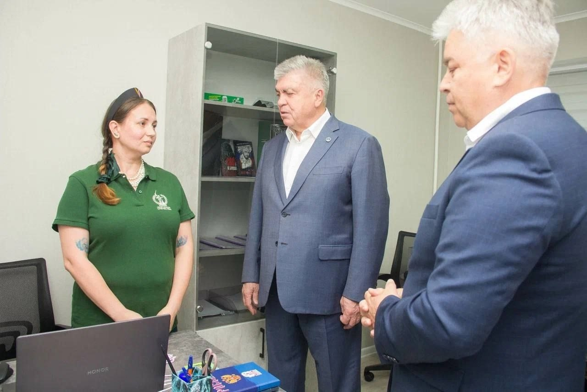

Открытие офиса Ассоциации «Городской Совет ветеранов специальной военной операции»
 







18.07.2025 года в городе Набережные Челны открылся офис Ассоциации «Городской Совет ветеранов специальной военной операции».
Общественная организация создана воинами, которые вернулись в родной город после выполнения задач в зоне боевых действий.
Председателем городского Совета избран Аюпов Шамиль Наилович, полковник, бывший командир полка. Заместитель председателя — участник СВО, ветеран боевых действий, командир штурмового отделения Нусратов Тимур Эдуардович.
За чашкой чая обсудили насущные вопросы по оказанию помощи и поддержке наших воинов.
Фотоматериал предоставлен ТГ каналом: Наиль Магдеев.